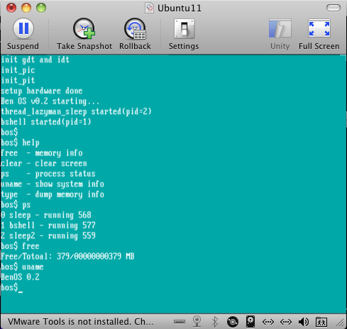
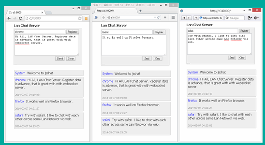

簡介
愛折騰技術『技術控』，對物聯網的跨界整合多有投入，不論是硬體電路、軟體開發，還是雲端架構與 SRE 維運都充滿興趣。 除了寫程式，更愛動手 DIY 把腦中的想法變成真正的成品。 同時也愛將自己的想法DIY成品，下列為我的開源小作品集：
Open Source Projects
-
bos
Practice to implement tiny x86-based operating system with simple interactive console

-
morsecode-translator
A morse code library and CLI written in C
-
jschat
A chat client and server implemented in Node.js

-
ImageShark
A prototype macOS app for extracting EXIF/GPS data and generating thumbnails
-
julujsc
A draft C-like parser written in JavaScript